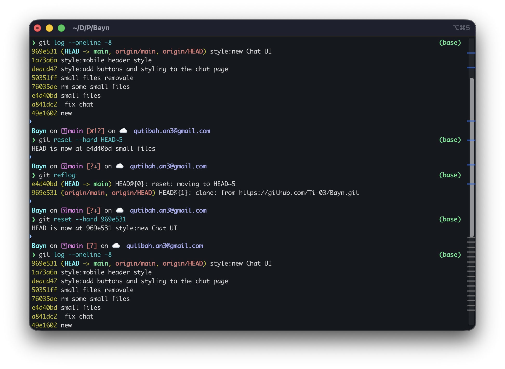
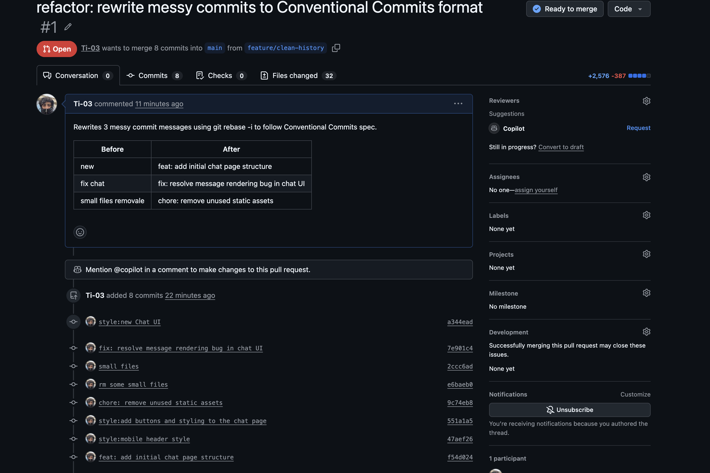

git cat-file — understand what Git actually stores under the hood.
# Step 1 — get the hash of HEAD git rev-parse HEAD 969e5317038a82f0178cf812bdf4cc1caaae6fd9 # Step 2 — inspect the commit object git cat-file -p HEAD tree 1ff311202b7189776ce88b12843376399061e606 parent 1a73a6acb6375882b0aeed527e6d1d65277be3e3 author ti <ququmaker9@gmail.com> 1767376516 +0300 committer ti <ququmaker9@gmail.com> 1767376516 +0300 style:new Chat UI # Step 3 — walk into the tree git cat-file -p HEAD^{tree} 100644 blob 81e8cf5358e371d518bec21d621f4dea81ca85b1 .gitignore 040000 tree 0aea480cb2f3655cff8deb72ac0422ad19356cfe backend 100644 blob b627249315716c94bc7b0dad366cd4358a1e2175 color palate.xlsx 040000 tree 4511d248a53f72fc72615e8ce4b46f14df7e6c50 frontend 100644 blob 9bdc65389e988bf7be3e72f917aa22b5779aa421 notes.txt 040000 tree a05d8c5f809a0e1a5f03c5f13b32bd62d5622397 pic 100644 blob d5465afb22b0bad1f9736f6dc783922108a59434 storage.rules # Step 4 — read the raw blob git cat-file -p 9bdc6538 firebase deploy --only functions cd X:/Drive/Projects/BetweenLines/frontend && npm run build && firebase deploy --only hosting cd X:/Drive/Projects/BetweenLines/backend && npm run build && firebase deploy --only functions
git cat-file -p HEAD on my Bayn repo revealed that a commit is not a snapshot of files — it's a pointer. It stores a tree hash, a parent commit hash, and metadata like author and message. When I walked into the tree with git cat-file -p HEAD^{tree}, I could see every file and folder as a list of (type, name, hash) entries — Git doesn't store filenames inside the file content, it stores them in the tree. Finally, reading the blob for notes.txt showed just the raw bytes of the file with no metadata at all. This made it click: Git builds up a complete picture of your project by chaining three objects — commit → tree → blob — not by copying files.
git reflog to recover them — proving that nothing committed is ever truly lost.
git reset --hard HEAD~5
git reflog — look for the SHA right before the reset
git reset --hard 969e531

# Before — confirm 8 commits exist git log --oneline -8 969e531 (HEAD -> main, origin/main) style:new Chat UI 1a73a6a style:mobile header style deacd47 style:add buttons and styling to the chat page 50351ff small files removale 76035ae rm some small files e4d40bd small files a841dc2 fix chat 49e1602 new # Destroy the top 5 commits git reset --hard HEAD~5 HEAD is now at e4d40bd small files # Reflog shows exactly where HEAD has been git reflog e4d40bd (HEAD -> main) HEAD@{0}: reset: moving to HEAD~5 969e531 (origin/main) HEAD@{1}: clone: from https://github.com/Ti-03/Bayn.git # Recover — reset back to the "lost" commit git reset --hard 969e531 HEAD is now at 969e531 style:new Chat UI # After — all 8 commits restored git log --oneline -8 969e531 (HEAD -> main, origin/main) style:new Chat UI 1a73a6a style:mobile header style deacd47 style:add buttons and styling to the chat page 50351ff small files removale 76035ae rm some small files e4d40bd small files a841dc2 fix chat 49e1602 new
git reset --hard HEAD~5 made it look like 5 commits were permanently gone — the log only showed e4d40bd and below. But git reflog revealed the full history of where HEAD has been, not just the commit chain. The lost commit 969e531 was sitting right there at HEAD@{1}. One reset --hard to that hash and everything was back, identical to before. The key insight: git reset doesn't delete objects, it just moves a pointer. The reflog tracks every pointer move, so nothing committed is ever truly lost.
git rebase -i to rewrite messy commit messages into proper Conventional Commits format.
| # | Before — Messy | After — Conventional |
|---|---|---|
| 01 | small files removale | chore: remove unused static assets |
| 02 | fix chat | fix: resolve message rendering bug in chat UI |
| 03 | new | feat: add initial chat page structure |
# Open interactive rebase for last 3 commits git rebase -i HEAD~3 # Change "pick" to "reword" for each commit, then save reword 76035ae → chore: remove unused static assets reword a841dc2 → fix: resolve message rendering bug in chat UI reword 49e1602 → feat: add initial chat page structure # Push the clean branch git push origin feature/clean-history --force-with-lease
Running git rebase -i HEAD~8 opened vi/vim by default. The terminal lagged and became unresponsive — couldn't type or navigate. Exited by force.
Fix: git config --global core.editor "nano" — switched to nano permanently.
After exiting the frozen editor, tried running git rebase -i again. Got: "fatal: It seems that there is already a rebase-merge directory". Then ran git rebase --continue too early which triggered merge conflicts across 5 files.
Fix: git rebase --abort — cancels the whole rebase and returns to a clean state.
reowrd instead of reword
In nano, accidentally typed reowrd on 3 lines. Git rejected the entire todo file with: "error: invalid command 'reowrd'". Running git rebase --edit-todo showed the same errors again and couldn't proceed.
Fix: git rebase --abort and start over, typing reword carefully this time.
The rebase ran cleanly but the 3 commit messages still showed the old names. Nano had opened 3 separate times (once per reword commit), but each was saved without editing the message text.
Fix: Redo the rebase. When nano opens for each commit — clear the existing line completely, then type the new conventional message before saving.
git commit --amend went to the wrong commit
The rebase had a typo: feat: add initial chat page structre. Running git commit --amend was supposed to fix the bottom commit — but HEAD was pointing at style:new Chat UI (the top commit), so amend renamed that one instead. This left both the typo and a wrongly-renamed top commit.
Fix: Another git rebase -i HEAD~8 marking both the wrongly-renamed top commit and the typo commit as reword — fixed both in one pass.

git rebase -i HEAD~8 to reach three messy commits deep in history and reword them. The key lesson: rebase -i doesn't just let you squash — it lets you rewrite any commit message in a range by marking it as reword. Git replays each commit one by one and pauses at each reword to let you change the message. The result is a clean, readable history that any maintainer can parse at a glance. --force-with-lease is safer than --force because it refuses to overwrite if someone else pushed to the branch since you last fetched.
I was working on the parser yesterday and noticed that when you have a deeply nested JSON object with arrays inside arrays, sometimes the indentation looks weird. I thought it might be related to the recent refactor. So I dug into it and...
The pretty-printer mis-indents arrays nested 3+ levels deep. Repro in linked PR. Root cause: recursive depth counter wasn't passed into the array branch.
Tells the reader what the message is about and what you want from them.
"Fixed it" is unreviewable. "Fixed it in parser.ts:142, reproduced on Node 18.17" is reviewable.
If you want a review, ask for it. Maintainers reading 50 notifications a day cannot afford to guess.
git reflog is a safety net — nothing committed is ever truly gone.